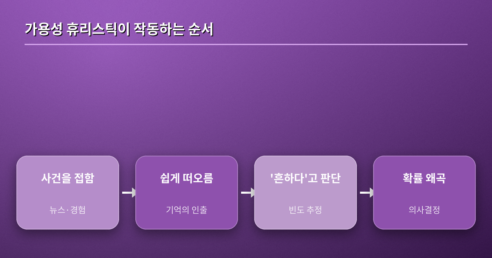
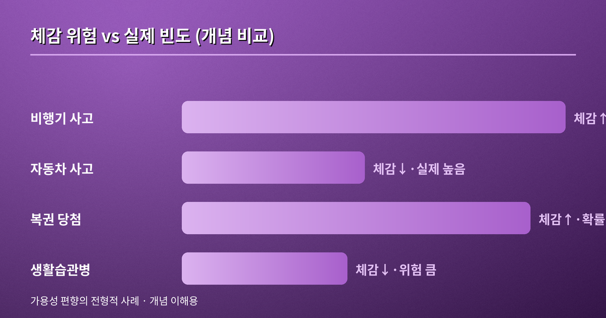
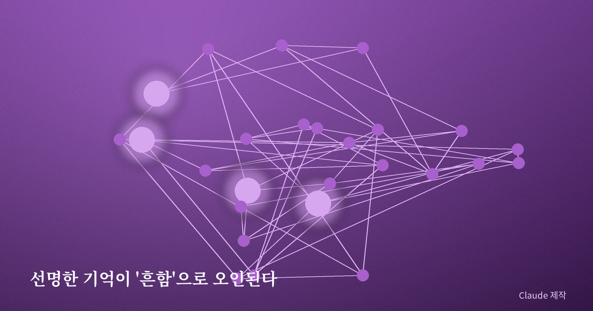

가용성 휴리스틱 — 쉽게 떠오르는 것을 흔한 것으로 착각하는 마음
얼마 전 지인이 "요즘 비행기 사고가 너무 많은 것 같아 여행이 무섭다"고 말했다. 통계로 보면 비행기는 자동차보다 압도적으로 안전한 이동수단이다. 그런데도 그의 공포는 진짜였다. 왜 우리는 실제 확률과 이렇게 다르게 세상을 느낄까. 그 간극의 이름이 바로 '가용성 휴리스틱(availability heuristic)'이다.
정의 — 떠오르는 쉬움을 흔함으로 바꾸는 지름길
가용성 휴리스틱은 어떤 사건의 빈도나 확률을 판단할 때, 그 사례가 '얼마나 쉽게 머릿속에 떠오르는가'를 근거로 삼는 사고의 지름길이다. 우리는 발생 빈도를 일일이 세어보는 대신, 관련된 예가 얼마나 빨리, 얼마나 선명하게 떠오르는지를 대신 물어본다. 쉽게 떠오르면 '흔하다'고, 잘 떠오르지 않으면 '드물다'고 결론짓는다. 문제는 '떠오르는 쉬움'이 실제 빈도가 아니라 생생함·최신성·감정의 강도에 좌우된다는 데 있다.

원조 실험 — 트버스키와 카너먼, 1973
이 개념은 1973년 심리학자 아모스 트버스키와 대니얼 카너먼의 연구에서 정식화됐다. 두 사람은 사람들에게 영어 단어를 두고 'r로 시작하는 단어'와 'r이 세 번째에 오는 단어' 중 어느 쪽이 많은지 물었다. 대부분은 앞쪽이 많다고 답했지만 실제로는 반대였다. r로 시작하는 단어가 훨씬 쉽게 떠오를 뿐이었다. 인출의 용이함이 빈도 판단을 밀어낸 것이다. 이들은 이런 사고의 지름길이 대개 유용하지만, 체계적이고 예측 가능한 방향으로 오류를 낳는다는 점을 보였다.
일상 속의 얼굴들
가용성 편향은 뉴스와 만나면 증폭된다. 항공 사고나 강력 범죄처럼 드물지만 충격적인 사건은 크게 보도되어 오래 기억에 남고, 그래서 실제보다 흔한 위험으로 체감된다. 반대로 생활습관병처럼 조용히 다가오는 큰 위험은 이미지가 흐릿해 과소평가된다. 복권 역시 당첨 장면만 반복적으로 노출되니 '나도 될 것 같은' 느낌이 확률을 압도한다. 최근에 본 것, 강렬했던 것, 나에게 일어난 것일수록 판단에서 과대한 몫을 차지한다.


왜 이런 지름길이 생겼을까
가용성 휴리스틱을 단순한 결함으로만 보면 절반만 이해한 것이다. 우리 뇌는 매 순간 쏟아지는 정보를 일일이 계산할 여유가 없다. 그래서 '자주 마주친 것일수록 쉽게 떠오른다'는 대체로 참인 규칙을 지름길로 삼아 빠르게 판단한다. 실제로 대부분의 평범한 상황에서 이 규칙은 잘 작동한다. 문제는 미디어와 알고리즘이 지배하는 현대 환경에서 '떠오르는 쉬움'이 더 이상 실제 빈도를 반영하지 않는다는 데 있다. 자극적인 사건일수록 더 널리, 더 반복적으로 노출되기 때문에 우리의 오래된 지름길은 새로운 정보 환경에서 자주 헛발을 딛는다. 편향은 뇌가 고장 나서가 아니라, 낡은 규칙이 바뀐 세상과 어긋나며 생기는 셈이다.
이 편향은 개인의 판단을 넘어 사회적 비용으로도 번진다. 사람들이 드문 위험을 과대평가하면 자원은 엉뚱한 곳에 쏠린다. 극적인 사고를 막는 데 예산이 몰리는 사이, 조용하지만 훨씬 많은 사람을 해치는 위험은 뒷전으로 밀린다. 공포는 눈에 띄는 것을 향하고, 실제 피해는 눈에 띄지 않는 곳에서 쌓인다. 그래서 가용성 편향을 이해하는 일은 개인의 합리성뿐 아니라 공동체의 우선순위를 바로잡는 문제이기도 하다.
실용적 통찰 — 인상 대신 빈도로
이 편향은 지능이 아니라 기억의 구조에서 나오므로 완전히 없앨 수는 없다. 다만 길들일 수는 있다. 무언가가 '흔하다'고 느껴질 때, 그 느낌의 근거가 통계인지 아니면 어제 본 뉴스 한 장면인지 되물어 보는 것이 시작이다. 결정을 잠시 미루고, 떠오르지 않는 반대 사례를 일부러 떠올리고, 하나의 사건이 아니라 추세와 기저율로 시야를 넓히면 판단은 훨씬 단단해진다. 세상을 더 정확히 보는 일은, 무엇이 떠오르는가가 아니라 무엇이 실제로 일어나는가를 묻는 데서 출발한다.